Je m'appelle Enzo LAMANNA, étudiant en deuxième année de BUT - Réseaux & Télécommunications à l'IUT d'Aubière.
Attiré au départ par la logique de la programmation, je me suis orienté vers le BUT R&T pour bénéficier d'une formation polyvalente et concrète. Dans le cadre de mon diplôme, je recherche une alternance de deux ans en systèmes et réseaux à compter de septembre 2026, selon un rythme d'un mois en entreprise et un mois à l'IUT.
Mon objectif pour cette alternance est de découvrir la réalité du terrain : appréhender le paramétrage des équipements réseau et maîtriser l'administration système, notamment la gestion des comptes avec Active Directory. Une fois ces compétences fondamentales acquises, j'ambitionne d'évoluer vers le métier de pentester. Je suis en effet convaincu qu'une connaissance approfondie de l'architecture des réseaux et des systèmes est indispensable pour savoir en identifier les failles.
Sociable, curieux, rigoureux et discret, je souhaite mettre ma motivation et mon envie d'apprendre au service de votre équipe.
À propos
Formations
BUT - Réseaux & Télécommunications (Option : Cyber)
2025 - 2028
BUT - Réseaux & Télécommunications (Option : Cyber)
2025 - 2028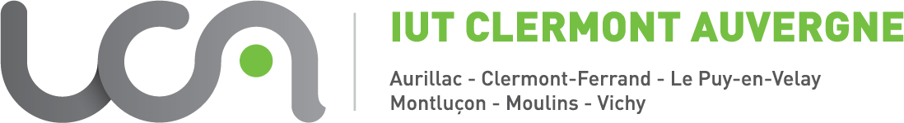
Objectif de la Formation
Le BUT Réseaux & Télécommunications (R&T) est un diplôme de niveau Bac+3 (Licence professionnelle), accessible après le Baccalauréat. Cette formation en trois ans vise à former des techniciens supérieurs spécialisés en réseaux informatiques, télécommunications et cybersécurité (à partir de la deuxième année BUT2).
Pourquoi l'IUT d'Aubière ?
Mon choix pour cette formation a été guidé par la
Journée Portes Ouvertes de l'IUT en Février 2023, durant laquelle j'ai
eu la chance d'échanger avec les enseignants et étudiants afin de clarifier mes doutes.
Ce qui m'a convaincu est l'approche polyvalente des cours, tous
orientés Réseaux. En plus de couvrir en profondeur les aspects techniques liés aux
Réseaux, la formation propose des modules essentiels tels que la
Communication et la Gestion de Projet, préparant ainsi
l'étudiant à toutes les exigences du métier de technicien réseaux.
Enfin, le BUT
R&T offre également la possibilité de réaliser des stages ou de
l'alternance (sur un rythme 1/1mois), ce qui est particulièrement
bénéfique pour acquérir une expérience professionnelle concrète et essentielle avant de
s'insérer sur le marché du travail.
Et maintenant ?
Après validation de ma première année de BUT Réseaux & Télécommunications en fin d'année universitaire 2026, je souhaite poursuivre mon cursus afin d'approfondir mes compétences et de débuter la spécialisation en cybersécurité dès la deuxième année.
Licence 1 - Mathématiques et Informatique
2024 - 2025
Licence 1 - Mathématiques et Informatique
2024 - 2025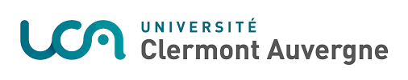
Objectif de la Formation
La Licence Mathématiques-Informatique offre, en trois ans, une double expertise. Elle développe la rigueur analytique grâce aux mathématiques et les fondations de l'algorithmique avec l'informatique, formant des profils aptes à modéliser et résoudre des problèmes complexes.
Pourquoi la Licence ?
Suite au refus de mon dossier pour le BUT R&T via Parcoursup en 2023, j'ai opté pour la Licence Mathématiques et Informatique. Ce choix m'a permis de rester aligné avec mon projet d'acquérir des compétences fondamentales en logique et en informatique.
Et maintenant ?
Bien que ma première année en Licence ne fût pas mon orientation de départ et qu'elle ne soit pas validé, cette expérience m'a permis de m'adapté aux exigences de la vie étudiante et de gagner en autonomie. J'ai également profité de cette période pour approfondir mes compétences techniques, notamment en découvrant l'environnement Linux et le langage Bash. Fort de ces acquis, j'ai renouvelé ma candidature pour le BUT R&T, un cursus en parfaite adéquation avec mon projet professionnel, et j'ai le plaisir d'y être admis pour la rentrée de septembre 2025.
Baccalauréat - Série Générale (Spécialités : Maths & NSI)
2021 - 2024
Baccalauréat - Série Générale (Spécialités : Maths & NSI)
2021 - 2024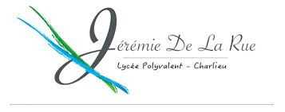
Objectif de la Formation
Le Baccalauréat général a pour objectif principal de se préparer aux études supérieures en offrant une culture générale approfondie. De plus, les spécialités Mathématiques et NSI permettent d'acquérir les fondations nécessaires pour s'orienter vers des filières scientifiques et technologiques.
Pourquoi le Lycée Jérémie de la Rue ?
J'ai choisi ce lycée car, en tant qu'établissement de mon secteur, il me permettait d'atteindre mon objectif de poursuite d'études supérieures tout en offrant les spécialités qui correspondaient parfaitement à mon projet : Mathématiques, NSI et Physique-Chimie en première, puis Mathématiques et NSI en terminale.
Et maintenant ?
L'obtention de mon baccalauréat m'a permis d'acquérir les bases solides nécessaires en Mathématiques et en Informatique pour m'engager dans mes études supérieures, notamment pour le BUT RT.
Certifications
Cisco - CCNA
Obtention : En cours
Cisco - CCNA
Obtention : En cours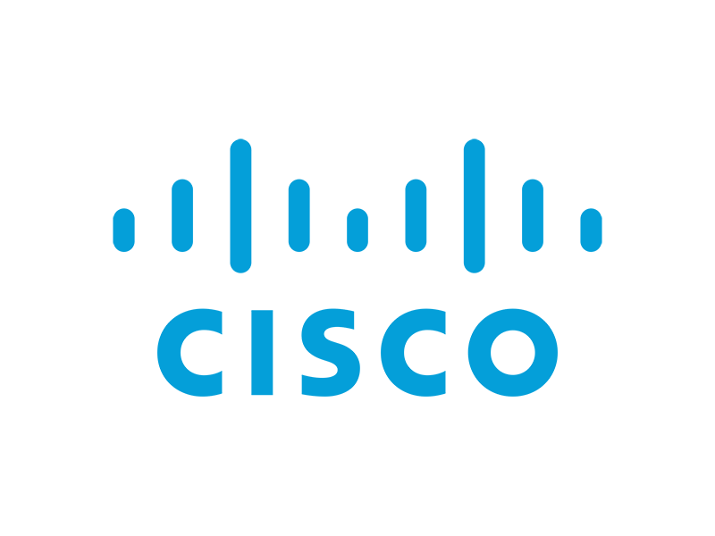
Objectif de la Certification
Cisco CCNA is une certification qui permet d'acquérir les compétences fondamentales pour l'installation, la configuration, l'exploitation et le dépannage des réseaux d'entreprise.
Pourquoi CCNA ?
Dans cette certification, j'apprends à maîtriser les fondements des réseaux en m'appuyant sur les modèles OSI et TCP/IP. L'objectif is de savoir configurer les paramètres de base des routeurs et commutateurs via Cisco IOS, tout en manipulant les systèmes de numération binaire et hexadécimal pour l'adressage. La formation permet de gérer les supports physiques, la commutation Ethernet, ainsi que la conception de plans d'adressage complexes par la segmentation de réseaux IPv4 et IPv6. La différenciation des protocoles TCP et UDP, la configuration de services comme le DNS ou le DHCP, et l'application des bases de la sécurité réseau font également partie des compétences acquises. Enfin, l'utilisation d'outils de diagnostic devient naturelle pour tester et dépanner la connectivité d'un réseau opérationnel.
Et maintenant ?
Une fois cette certification acquise, j'aurai appris les méthodes permettant de concevoir et d'implémenter une topologie réseau, en utilisant l'outil de simulation Cisco Packet Tracer, et serai capable de paramétrer la majorité des équipements Cisco.
SST - Sauveuteur Secouriste du Travail
Obtention : 2026
SST - Sauveuteur Secouriste du Travail
Obtention : 2026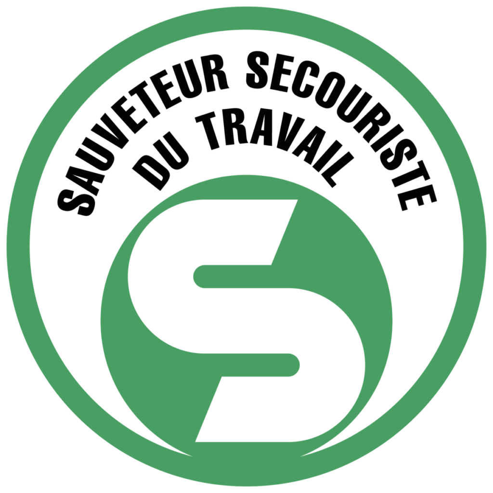
Objectif de la Certification
La certification SST (Sauveteur Secouriste du Travail) est une formation qui permet d'acquérir les compétences fondamentales pour intervenir efficacement face à une situation d'accident du travail et participer activement à la prévention des risques professionnels au sein de l'entreprise.
Pourquoi SST ?
Souhaitant apporter une réelle valeur ajoutée en entreprise, j'ai choisi de passer le SST pour compléter ma formation PSC1 et l'adapter au contexte professionnel. Je maîtrise désormais les gestes de secours indispensables pour protéger une personne en danger tout en développant discernement nécessaires pour gérer une situation critique. De plus, cela m'a permis d'assimiler le cadre juridique et mes responsabilités concernant l'exécution de ces gestes de premiers secours.
Et maintenant ?
Désormais certifié, je suis pleinement apte à intervenir avec méthode pour protéger toute personne en danger. Même face à des situations complexes ou difficiles, je m'engage à faire tout mon possible pour porter secours et appliquer les gestes nécessaires. Que ce soit dans ma vie quotidienne ou au sein de mon futur environnement professionnel, je dispose des outils techniques et réglementaires indispensables pour assurer la sécurité de mon entourage et agir en tant que membre actif de la prévention.
PSC1 - Formation premiers secours citoyen
Obtention : 2024
PSC1 - Formation premiers secours citoyen
Obtention : 2024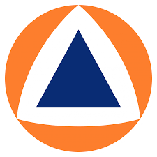
Objectif de la Certification
La certification PSC1 permet de préparer au mieux l'arrivée des secours en effectuant les premiers gestes de secourisme et les soins vitaux immédiats, optimisant ainsi les chances de survie de la victime. La validation de cette certification s'effectue au moyen d'exercices pratiques et de mises en situation simulant des urgences réelles comme les cas d'étouffement, de brûlures ou de perte de conscience.
Pourquoi la PSC1 ?
J'ai entrepris la démarche de faire cette certification afin de savoir secourir et protéger une personne en danger en appliquant les bons gestes. Cela m'assure de répondre avec calme et discernement aux situations de stress, sans paniquer dans un cadre personnel ou professionnel.
Et maintenant ?
Grâce à cette certification, je suis apte à intervenir et à mettre en œuvre les gestes nécessaires pour secourir et protéger une personne en situation de danger dans ma vie quotidienne.
Compétences
Programmation
Python
Python
Essentiel pour l'automatisation, Python est un langage dont je maîtrise aussi bien les bases — comme la manipulation des variables, des boucles et des fonctions — que des concepts plus avancés. Je sais notamment implémenter la récursion et appliquer les principes de la Programmation Orientée Objet (POO) à travers l'utilisation de méthodes dédiées.
C
C
Je maîtrise les bases et la structure du langage C, ce qui m'a permis de mieux assimiler la gestion de la mémoire et l'organisation des espaces de données, notamment à travers la manipulation des pointeurs et de l'allocation dynamique.
Web (HTML / CSS / JS)
Web (HTML / CSS / JS)
En développement web, je maîtrise les technologies fondamentales : HTML pour la structure, CSS pour le design, et JavaScript pour le dynamisme. Ces compétences m'ont non seulement permis de concevoir et réaliser l'intégralité de ce portfolio, mais elles m'aident aussi à analyser l'architecture d'une application pour mieux en comprendre les vulnérabilités, qu'elles se situent côté front-end ou back-end.
Base de données (PHP / SQL)
Base de données (PHP / SQL)
Je maîtrise le couple PHP / SQL pour le développement côté serveur. PHP me permet de gérer la logique interne de l'application (le traitement des requêtes utilisateurs), tandis que SQL assure l'interaction avec les bases de données. Cette compétence back-end est essentielle pour comprendre comment transitent les données et comment sécuriser un site contre des failles critiques comme les injections SQL.
Bash & Linux
Bash & Linux
Maîtrise de l'environnement Linux et de son terminal pour naviguer avec aisance au sein des arborescences de fichiers. Capacité à concevoir des scripts Bash simples afin d'automatiser des tâches répétitives et optimiser la gestion du système.
PowerShell
PowerShell
Utilisation de PowerShell sous Windows pour l'administration système, notamment la gestion des utilisateurs, l'administration des droits et la manipulation avancée du système de fichiers (fichiers et dossiers).
Réseaux
Configuration d'équipements
Configuration d'équipements
Je maîtrise la configuration en ligne de commande (CLI) des équipements Cisco, notamment les routeurs, commutateurs et serveurs. Cela me permet de déployer et de paramétrer des infrastructures réseaux entièrement opérationnelles.
Test de connectivité et Analyse
Test de connectivité et Analyse
Je sais valider le bon fonctionnement d'un réseau en effectuant des tests de connectivité (Ping). J'utilise également le logiciel Wireshark pour effectuer de l'analyse de trames, ce qui me permet de vérifier la conformité des échanges et de diagnostiquer d'éventuelles anomalies.
Téléphonie d'entreprise
Téléphonie d'entreprise
Je sais déployer et configurer un serveur IPBX pour mettre en place une solution de Téléphonie sur IP (ToIP) en entreprise. Je maîtrise l'intégration de différents terminaux, tels que les téléphones DECT ou les boîtiers ATA, ainsi que le paramétrage des fonctionnalités professionnelles comme les messageries vocales et les groupes d'appel.
Services Réseau
Services Réseau
Capable de répondre aux besoins d'une infrastructure, j'assure la mise en place et le paramétrage de nombreux services clés : le DHCP (Dynamic Host Configuration Protocol) pour l'adressage dynamique, le DNS (Domain Name System) pour la résolution de noms, le FTP (File Transfer Protocol) pour le transfert de fichiers, ainsi que le déploiement de serveurs Web. De plus, je sais gérer un domaine via Active Directory (AD) sous Windows Server, notamment en configurant des stratégies de groupe (GPO).
Logiciel de simulation (Cisco Packet Tracer)
Logiciel de simulation (Cisco Packet Tracer)
Utilisation du logiciel de simulation Cisco Packet Tracer pour maquetter virtuellement des infrastructures réseaux physiques. Cet outil me permet de concevoir des architectures complexes et d'effectuer des tests rigoureux en mode temps réel ou en mode simulation afin de valider leur bon fonctionnement avant tout déploiement réel.
Plan d'adressage
Plan d'adressage
Capacité à structurer un plan d'adressage logique et évolutif en fonction du cahier des charges, assurant la bonne connectivité de l'ensemble des équipements et facilitant la gestion du réseau.
Télécommunications
Oscilloscope, GBF & Analyseur de spectre
Oscilloscope, GBF & Analyseur de spectre
L'oscilloscope me permet d'analyser et de réaliser des mesures précises sur les
signaux. C'est un outil primordial qui me permet de visualiser concrètement leur
comportement et leur évolution temporelle.
Le GBF (Générateur de Basses Fréquences) me permet de générer tout
type de signaux (sinusoïdaux, carrés, triangulaires). Cela me
permet d'injecter des signaux tests pour mener à bien mes
différentes expérimentations.
L'analyseur de spectre me permet d'étudier les signaux dans le
domaine fréquentiel. Il me permet notamment d'analyser la
bande passante, de mesurer la puissance des
fréquences et de repérer d'éventuelles interférences.
Fibre Optique
Fibre Optique
L'étude de la fibre optique me permet de comprendre comment les données du réseau transitent à travers la lumière. Elle me permet également de maîtriser les outils de test pour vérifier qu'il n'y a pas de coupure ou d'atténuation dans le câble en verre.
Schématisation et Analyse
Schématisation et Analyse
Capacité à retranscrire un besoin technique sous forme de schéma fonctionnel afin de structurer la réflexion en amont. Cette étape essentielle de pré-production sert de support d'analyse pour anticiper les contraintes, identifier les anomalies potentielles et sécuriser le déploiement réel de la solution.
Communication
Vulgarisation & Expression orale
Vulgarisation & Expression orale
Grâce à des cours de communication, j'ai appris à vulgariser des concepts
techniques complexes pour des personnes qui ne s'y connaissent pas en
informatique. En m'appuyant sur des visuels, des schémas ou des métaphores
concrètes, je m'assure qu'ils comprennent parfaitement les enjeux et les solutions
apportées.
Grâce à un travail de préparation rigoureux, j'aborde les
présentations orales avec assurance. Je veille à employer les termes
appropriés pour structurer mon propos et rendre mon discours accessible à
mon auditoire.
Compétences Humaines
Relationnel
Humaine
Relationnel
Humaine
Grâce à mon bon relationnel, je m'intègre facilement dans un groupe tout en
sachant travailler de manière autonome. Cela me permet de mener à bien nos
projets collectifs en communiquant clairement et en coordonnant la
répartition des tâches de manière intelligente.
Acquisition :
Mon sens du relationnel s'est développé à travers mes expériences
professionnelles en caisse, qui m'ont confronté quotidiennement au contact
client, ainsi qu'à travers les cours de communication suivis
en BUT R&T. Ces enseignements m'ont appris à structurer mes idées et à les
transmettre de manière claire, méthodique et adaptée à chaque
interlocuteur.
Curiosité
Humaine
Curiosité
Humaine
Naturellement curieux, je cherche toujours à approfondir mes
connaissances, ce qui me permet de progresser et d'évoluer en
permanence dans mon domaine. Loin d'être un signe de lassitude, cette démarche
traduit ma volonté constante de me perfectionner.
Acquisition :
Ma curiosité s'exprime avant tout à travers ma pratique artistique, où
j'explore en permanence de nouveaux univers sans me limiter à une seule technique passant
de l'aquarelle et la peinture traditionnelle au dessin
réaliste ou au pixel art, tout en restant ouvert à d'autres
médiums. Cet esprit d'exploration se retrouve également dans le domaine informatique, où
l'interconnexion des langages de programmation et des technologies m'incite
à ne jamais me cantonner à un seul sujet et à renouveler sans cesse mes
apprentissages.
Rigueur
Humaine
Rigueur
Humaine
Soucieux de la qualité de mon travail, je m'attache à livrer des
résultats soignés. J'applique cette même rigueur lors des
phases de mise en place, en sécurisant chaque procédure pour écarter tout
risque de dysfonctionnement.
Acquisition :
Ma rigueur s'est développée à travers les nombreux travaux pratiques en
réseaux réalisés durant mon BUT R&T, où le paramétrage des équipements
exige un contrôle minutieux : la moindre erreur de configuration peut bloquer l'ensemble
d'un réseau. Cette exigence s'est également renforcée lors de mes expériences
professionnelles en mise en rayon, où le respect strict des normes et le
soin apporté à la disposition des produits étaient essentiels pour garantir un rayon
irréprochable.
Langue
Anglais
Niveau A2+
Anglais
Niveau A2+Mon niveau d'anglais me permet de comprendre et de tenir une conversation simple. Par ailleurs, mes compétences techniques me permettent de comprendre les erreurs affichées dans un terminal.
Expériences
Saisonnier Netto - Hôte de caisse et Mise en rayon
Août 2026
Saisonnier Netto - Hôte de caisse et Mise en rayon
Août 2026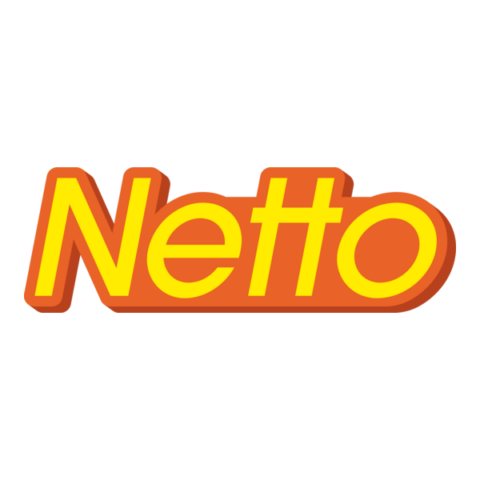
Contexte
Poursuivre ma montée en compétences au sein du monde professionnel, acquérir une solide polyvalence terrain tout en finançant ma vie étudiante et en optimisant mon temps pendant les périodes de vacances.
Objectif
Assurer le remplacement d'un salarié durant la période estivale, en intervenant à la fois sur la mise en rayon et la caisse, afin de garantir la disponibilité des stocks dès l'ouverture et une prise en charge fluide des clients.
Missions
Cette mission s'articule principalement autour de deux grands axes. D'une part, j'ai
assuré le réapprovisionnement polyvalent des rayons du magasin (sec,
liquides, animalerie, promotions, surgelés et frais), ce qui a exigé une grande
adaptabilité et une rigueur constante pour respecter
les spécificités de chaque secteur, qu'il s'agisse de la gestion des dates de péremption
ou de la manipulation de charges.
D'autre part, j'ai tenu la fonction d'hôte de
caisse, gérant l'accueil des clients et la fiabilité des opérations
d'encaissement (espèces, cartes bancaires, chèques, factures
professionnelles et cagnottes de fidélité). Cette responsabilité m'a permis de
développer une forte concentration et un grand calme face à
l'affluence, tout en veillant à la sécurité, à la gestion du téléphone et à la
résolution méthodique des imprévus.
Enfin, j'ai su faire preuve de
pédagogie en accompagnant les clients dans la transition numérique,
notamment lors du passage de la carte physique à l'application de fidélité
dématérialisée.
Bilan
Cette expérience s'est déroulée au sein d'une équipe soudée, favorisant
un environnement de travail constructif et dynamique. Elle a permis de consolider les
compétences en matière de gestion de la surface de vente, grâce à la
maîtrise des processus de mise en rayon appliqués à de nouvelles structures
d'organisation.
Les premières semaines ont nécessité une période d'adaptation rigoureuse
face à la gestion des encaissements, rapidement surmontée pour gagner en
autonomie totale. Doté d'un bon relationnel, mon
profil m'a permis de faire preuve de sang-froid en
situation de tension et d'efficacité dans l'accompagnement de la clientèle.
Sur le plan
technique, l'immersion a offert l'opportunité d'exercer mes compétences en
vulgarisation informatique auprès des usagers et d'entrevoir rapidement
le fonctionnement de l'infrastructure réseau. Enfin, cette période a
permis de contribuer concrètement au financement de ma vie étudiante.
Saisonnier E.Leclerc - Mise en Rayon et Boulangerie
Août 2024 et Août 2025
Saisonnier E.Leclerc - Mise en Rayon et Boulangerie
Août 2024 et Août 2025Contexte
Contexte - Août 2025
Assurer le remplacement d'un salarié sur l'ensemble du rayon des liquides afin de garantir la continuité du service, la gestion des stocks et la disponibilité des produits durant la forte affluence estivale.
Contexte - Août 2024
Découvrir le milieu de la grande distribution à travers une mission polyvalente en boulangerie et en rayon liquides, afin d'assurer la préparation des produits et l'approvisionnement tout en soutenant l'équipe pendant la période estivale.
Objectif
Objectif - Août 2025
Poursuivre mon expérience en grande distribution en prenant en charge l'ensemble du rayon des liquides, afin de garantir la continuité du service, la gestion complète des stocks et la disponibilité des produits face à la forte affluence estivale.
Objectif - Août 2024
Découvrir le monde professionnel et le fonctionnement d'une grande surface à travers une mission polyvalente, en participant à la production en boulangerie et à l'approvisionnement du rayon des liquides pour soutenir l'équipe en période estivale.
Missions
Août 2025 - Gestion globale du rayon des liquides (1 mois)
Fort d'un premier aperçu acquis l'année précédente, cette mission s'est concentrée
exclusivement sur l'ensemble du rayon des liquides (bières, sirops,
gros alcools, eaux et vins). L'activité a consisté à assurer la mise en
rayon à l'aide d'un transpalette électrique pour garantir un choix
optimal pour la clientèle.
La préparation de l'ouverture a impliqué la réalisation rigoureuse du
facing, l'organisation et le maintien de la propreté de la
réserve pour anticiper les livraisons, ainsi qu'une forte
polyvalence pour intervenir sur l'intégralité des sous-secteurs du
rayon.
Août 2024 - Découverte de la grande distribution (2 semaines)
Cette première période s'est divisée en deux expériences distinctes. Durant la
première semaine en boulangerie, la mission principale a consisté à
emballer un quota précis de produits avant l'ouverture, en faisant preuve de rigueur
face aux spécificités des emballages, des poids et des étiquettes. Le poste a aussi
englobé le « placage » des produits surgelés sur chariots pour préparer la cuisson,
ainsi qu'une aide ponctuelle auprès du boulanger.
La seconde semaine, orientée sur le rayon des liquides (bières et
sirops), a permis d'aborder l'autonomie dans la manipulation de produits
lourds, la réalisation du facing, et l'accompagnement des clients.
Cette période a également été marquée par la première manipulation prudente des
transpalettes (électriques et manuels), exigeant vigilance et
sécurité.
Bilan
Cette expérience a offert une première immersion concrète dans le monde professionnel,
permettant de développer des compétences clés telles que l'organisation
rigoureuse, la gestion du timing pour identifier le moment opportun
pour solliciter de l'aide, ainsi que le renforcement de l'esprit
d'équipe.
Elle a également permis d'améliorer le relationnel
client, de maîtriser la manipulation de charges lourdes,
l'utilisation de transpalettes (électriques et manuels), le respect des
règles de sécurité, la réalisation du facing et la
gestion de la surface de vente.
Projets
Projets Professionnels
Java - Développer des applications communiquantes
2026 - Semestre 1 BUT2 R&T
Java - Développer des applications communiquantes
2026 - Semestre 1 BUT2 R&TContexte
Les infrastructures informatiques modernes sont constituées d'un grand nombre d'équipements interconnectés : routeurs, commutateurs, points d'accès Wi-Fi, serveurs, ordinateurs, objets connectés, imprimantes réseau, équipements industriels, etc. Dans une entreprise, ces équipements peuvent être répartis sur plusieurs bâtiments ou plusieurs sites géographiques. Leur bon fonctionnement est indispensable aux services numériques.
Lorsqu'un équipement devient indisponible, qu'un serveur manque de mémoire ou qu'un point d'accès Wi-Fi ne répond plus, il est essentiel de détecter le problème rapidement. Il n'est évidemment pas envisageable de vérifier manuellement et en permanence chaque équipement : des outils de supervision réseau sont donc utilisés.
Objectif
Dans le cadre de ce projet, je dois développer une version simplifiée d'un outil de supervision. Mon objectif n'était pas de reproduire un produit industriel existant, mais de comprendre et maîtriser les principaux mécanismes informatiques permettant de construire une application de supervision :
- modélisation des équipements ;
- gestion des utilisateurs ;
- gestion des droits ;
- conservation des données ;
- gestion d'événements ;
- détection d'anomalies ;
- communication entre plusieurs applications ;
- échanges réseau ;
- gestion simultanée de plusieurs clients ;
- interface graphique.
L'application que doit s'appeler NetMonitor.
Missions
Ce projet s'effectue de manière progressive et structurée, en suivant plusieurs volets successifs :
- Réalisation préalable d'un cahier des charges complet.
- Développement pas à pas de l'application en Java.
- Implémentation première des fonctionnalités directement dans le terminal.
- Évolution vers une interface graphique avec JavaFX pour améliorer l'application.
Bilan
Bilan à venir...
Projet Intégratif - Mise en place d'un réseau d'entreprise
2026 - Semestre 2 BUT1 R&T
Projet Intégratif - Mise en place d'un réseau d'entreprise
2026 - Semestre 2 BUT1 R&T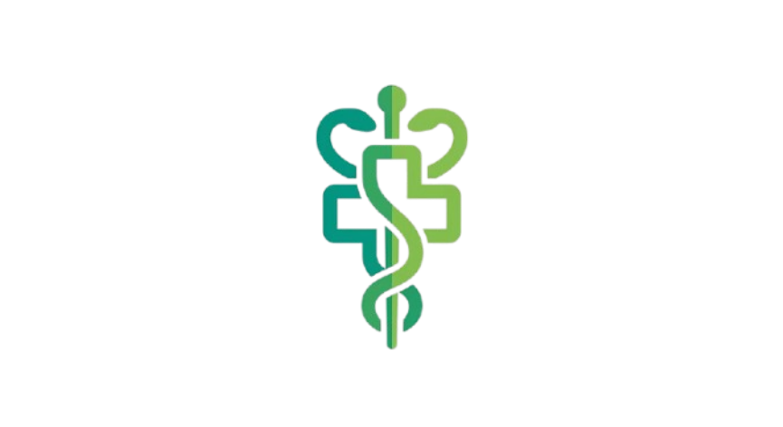
Contexte
Synthèse de cette première année de BUT Réseaux et Télécommunications, ce projet de fin d'année vise à mobiliser l'ensemble des compétences acquises. Il s'articule autour d'une approche transversale combinant les réseaux, la programmation, la téléphonie, la gestion de projet et la communication.
Objectif
L'objectif est de déployer une infrastructure réseau performante pour l'entreprise PharmaSanté, tout en prenant des initiatives d'optimisation lors de sa conception. Il s'agit également de mettre en œuvre des services réseau spécifiques et adaptés aux besoins des pharmaciens ainsi qu'à ceux des clients.
Missions
Pour mener à bien ce projet en cette fin de semestre, la première étape a nécessité une organisation rigoureuse afin de définir la topologie, l'architecture réseau et les équipements requis, dans le strict respect du cahier des charges. L'objectif central est de concevoir et déployer une infrastructure complète pour l'entreprise PharmaSanté, choisie en équipe, en interconnectant des services essentiels tels que l'administration sous Windows Server et Linux, le DHCP, le transfert de fichiers (FTP) et la téléphonie sur IP (IPBX). Enfin, ce projet se clôture par une soutenance orale simulant une présentation professionnelle directement face au client.
Bilan
Bilan à venir...
HTML et CSS - Portfolio
2025 - Semestre 1 BUT1 R&T
HTML et CSS - Portfolio
2025 - Semestre 1 BUT1 R&T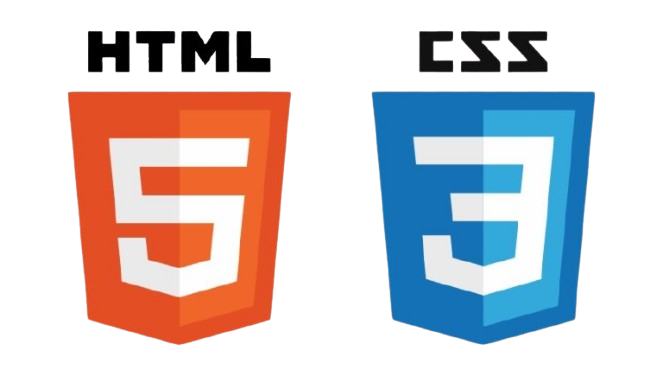
Contexte
Se présenter sur Internet avec un portfolio à développer en HTML et CSS.
Objectif
Ce portfolio a pour vocation d'appuyer notre insertion professionnelle en fournissant un document détaillé de notre parcours, tout en constituant une mise en application concrète des notions HTML et CSS acquises lors de notre première année de BUT en développement Web.
Missions
Le projet a démarré par des séances de TD fournissant une structure de base uniforme pour l'ensemble du groupe. Par la suite, le développement s'est fait en autonomie totale. La principale difficulté résidait dans cette indépendance, bien que les enseignants aient pu être consultés pour des conseils. J'ai principalement mobilisé des ressources externes (W3Schools, MDN Web Docs, Instagram et YouTube) pour surmonter les défis et résoudre les problématiques de codage rencontrées.
Bilan
Ce projet de portfolio m'a permis de mettre en pratique le HTML et le CSS de manière concrète. Si le rendu visuel est satisfaisant, je prévois d'affiner la partie technique au fur et à mesure de l'évolution du site et de l'ajout de nouveaux contenus, afin d'optimiser progressivement la qualité de mon code.
Python - Traiter des données complexes
2025 - Semestre 1 BUT1 R&T
Python - Traiter des données complexes
2025 - Semestre 1 BUT1 R&TContexte
Conception et développement d'un outil Python destiné à optimiser l'organisation des étudiants. Le programme permet de récupérer et d'afficher un emploi du temps personnalisé en injectant les données spécifiques à chaque groupe de classe.
Objectif
Cette SAÉ consiste à appréhender et exploiter les bibliothèques NumPy et Pandas en Python pour le traitement de données de grande envergure. L'objectif est d'analyser un fichier CSV volumineux en réalisant des opérations de tri, de filtrage et de manipulation de données structurées.
Missions
Extraction des données : Dans un premier temps, j'extrais les données de l'emploi du temps au format CSV de manière non organisée. L'enjeu majeur consiste à traiter la structure des colonnes et à gérer les point-virgules faisant office de délimiteurs entre les données.
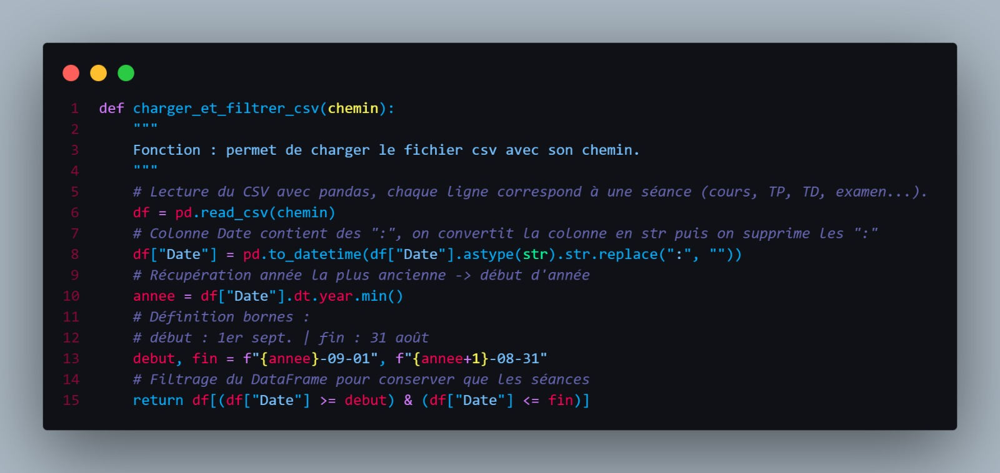
Création du planning : Une fois les données extraites, je procède à un filtrage selon le groupe sélectionné par l'utilisateur. Par exemple, si le groupe "TP3" est choisi, le programme isole uniquement les séances de cours correspondantes et écarte les données non pertinentes.
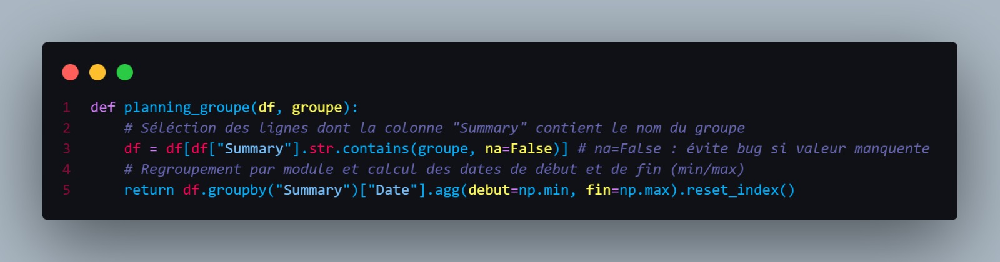
Affichage du planning : Enfin, j'ai implémenté une fonction d'affichage qui itère sur les données sélectionnées pour restituer le planning final pas à pas.
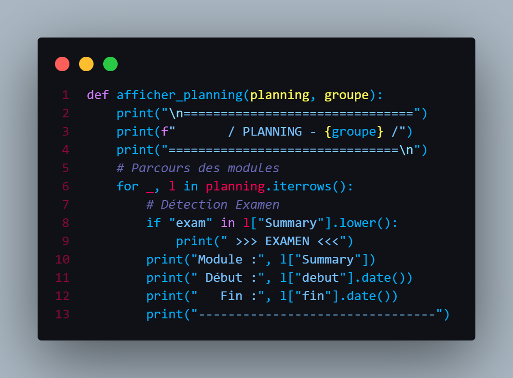
Lancement du programme : Pour finir, j'ai créé une fonction main() permettant de faire appel aux différentes fonctions pour réaliser le projet.
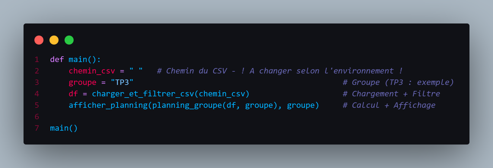
Bilan
La difficulté majeure rencontrée lors de ce projet a été d'apprendre à optimiser mon code, notamment en réduisant, supprimant et compactant certaines instructions. Ce travail a été réalisé en suivant strictement le cahier des charges et le calendrier impartis.
J'en ai retiré trois acquis majeurs : la capacité à prendre en main une bibliothèque Python en autonomie, l'optimisation de code pour plus d'efficacité, ainsi qu'une meilleure méthodologie d'organisation.
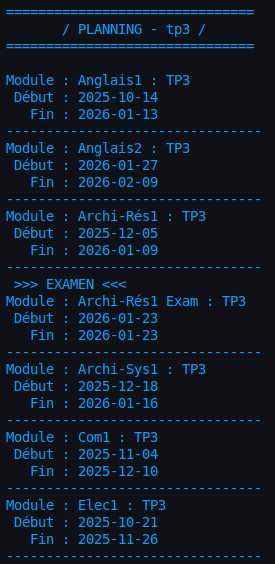
Aperçu du résultat avec le groupe TP3
Projets Personnels
Installation Dual Boot — Windows 11 / Kali Linux
Septembre 2026
Installation Dual Boot — Windows 11 / Kali Linux
Septembre 2026Contexte
Dans le cadre de mon cours de pentest, j’utilise des VM sous Kali Linux, notamment en vue d’un futur projet de SAE dont l’objectif sera d’obtenir l’accès à une VM victime pour la pirater.
Suite à l’utilisation de Kali sur ces machines virtuelles et aux atouts de cette distribution orientée cybersécurité — qui intègre de nombreux outils spécialisés —, j’ai décidé d’installer un dual boot Windows 11 / Kali Linux sur mon PC perso. Cela me permet d’expérimenter depuis chez moi, de découvrir une nouvelle distribution Linux et de comprendre l’utilité des différents outils de pentester.
Objectif
Mon objectif est donc de maîtriser un système d'exploitation utile pour mes cours en BUT, tout en préparant mon projet de devenir pentester.
Cela me permet d'avoir déjà une connaissance des outils les plus utilisés et de comprendre concrètement comment pirater ou protéger une infrastructure.
Missions
Missions à venir...
Bilan
Bilan à venir...
Divers
Dessin - Ma passion créative
Art
Dessin - Ma passion créative
ArtLe dessin est bien plus qu'un simple passe-temps pour moi : c'est un espace de liberté et de création. Il entretient ma soif d'apprendre, de me perfectionner et de recommencer, tout en développant un sens aigu de la précision.
Parmi toutes ces disciplines, le pixel art occupe une place
privilégiée. Je partage d'ailleurs mes créations sur mon compte Instagram
(@intakk_iii), un espace où je représente visuellement l'ensemble des
univers qui me passionnent.
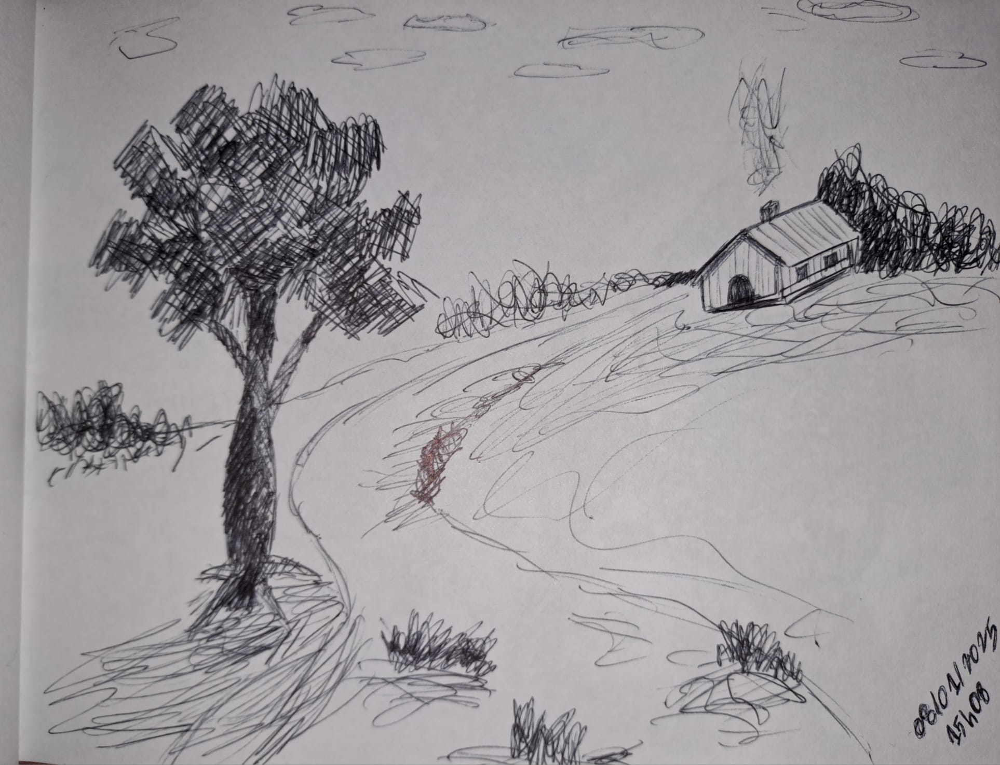
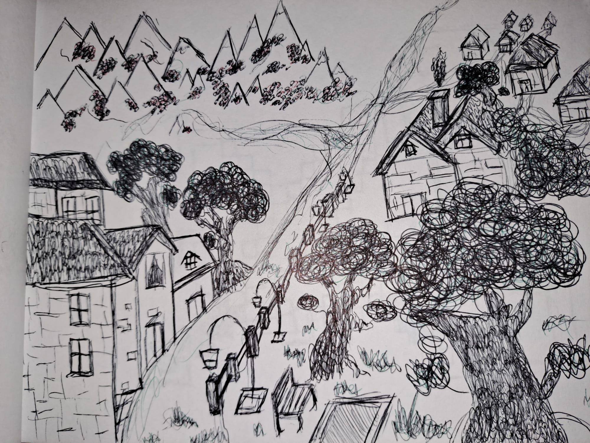
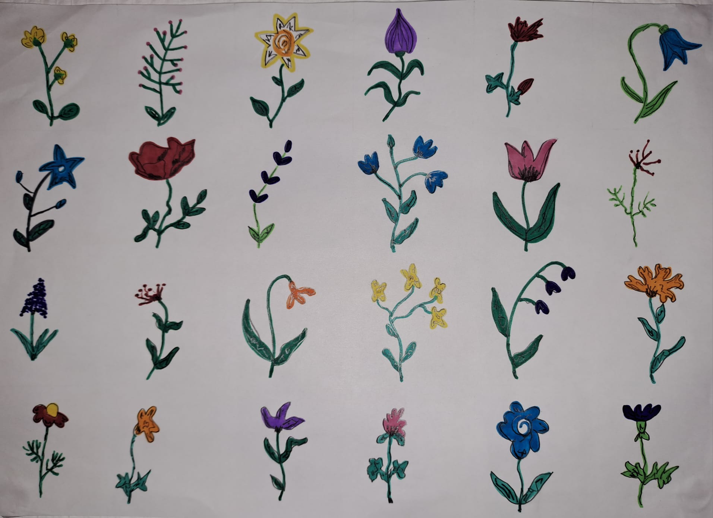
Piano - Ma passion musicale
Musique
Piano - Ma passion musicale
Musique
Pratiquant le piano par passion depuis l'âge de 6 ans, cet instrument
est devenu mon échappatoire pour décompresser et m'exprimer
artistiquement. Cette pratique m'a inculqué une grande rigueur,
nécessaire pour mémoriser les morceaux, ainsi qu'une capacité
d'adaptation essentielle pour interpréter des partitions aux rythmes et
intensités variés.
De par ma grande curiosité, je joue tout ce qui me plaît, qu'il s'agisse de musiques de
jeux vidéo, de films ou de séries.
Mon morceau préféré est La Valse d'Amélie, issue de la bande
originale du film Le Fabuleux Destin d'Amélie Poulain.
La Valse d'Amélie - Arrangement
Solas - Arrangement
Musculation - Mon dépassement personnel
Sport
Musculation - Mon dépassement personnel
Sport
La musculation est bien plus qu'un sport : c'est un moteur de bien-être
quotidien. Elle améliore ma forme physique et renforce durablement ma
confiance en moi.
Cette pratique m'apprend l'organisation, que je m'entraîne seul ou à
plusieurs. Partager ces séances avec des amis est une vraie source de motivation. Nous
nous poussons mutuellement vers le haut dans une ambiance conviviale.
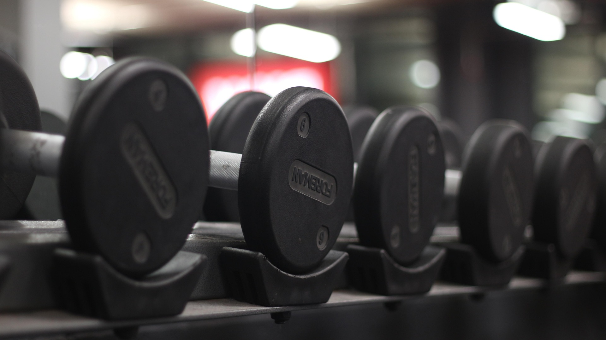
Mon C.V.
Me contacter
Mon profil vous intéresse et vous voulez me contactez ? Remplissez le formulaire ci-dessous :